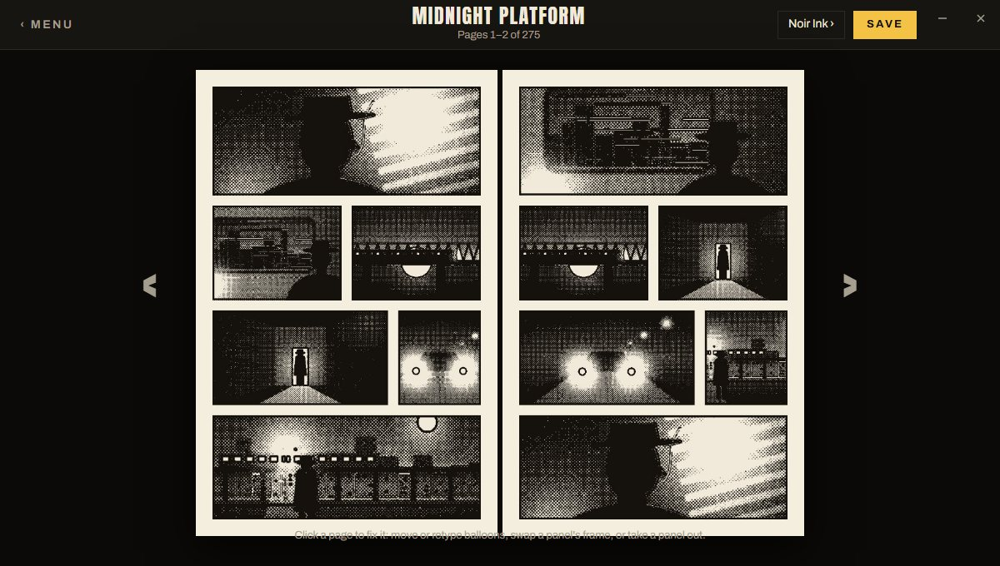
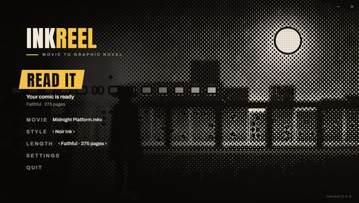
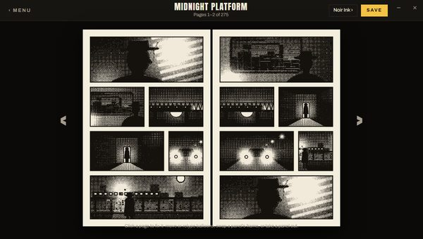
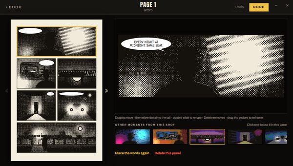

INKREEL
Movie to graphic novel
A Windows app that turns a movie on your PC into a comic. It watches the film, picks its moments, inks them, letters the dialogue into balloons and binds it all as a PDF. Then you can fix any page.

The app



How it works
Six stages, one button
Add a movie and press MAKE COMIC. A 1 h 45 min film with no subtitles takes about 8 to 9 minutes on the PC Inkreel was made on, and about 5 with subtitles. PAUSE stops it; RESUME carries on from the last finished stage.
-
1 Watch
One pass through the whole film finds every cut and every scene, and how loud each moment is.
-
2 Listen
The lines come from the movie's own subtitles or a
.srtbeside it. With none, Inkreel listens (Whisper, on an NVIDIA graphics card) and writes them in English. -
3 Pick
Scenes become beats, and each beat gets its best frame: conversations, reactions, the shot that sets the scene. Fast cutting is gathered into moments.
-
4 Ink
Each frame is drawn in your look (Noir Ink, Pop Halftone, Clean Line or Manga) at 300 dpi, cropped to keep faces whole and leave room for the words.
-
5 Letter
Inkreel watches lips to see who's talking, then letters balloons and captions that keep off faces, heads and the things that matter in the shot.
-
6 Bind
Pages are laid out on 4 to 8 panel grids with a cover, and saved as a PDF in
Documents\Comics. Choose the length: Faithful (about 275 pages for that 1 h 45 min film), Every shot, Condensed, or a fixed 32 to 200 pages.
Then fix any page in the Book
Click a page, then a panel. Drag a balloon to move it, drag its yellow dot to aim the tail, double-click to retype it. Drag the picture to reframe, pick another moment of the same shot, or take a panel out and the page lays itself out again. Undo works page by page, and Done writes the PDF again in a second or two.
Before you start
What your PC needs
- Windows 10 or 11, 64-bit. Nothing else to install, and no admin rights needed.
- A movie file on your PC: MP4, MKV, MOV, AVI and most others. Inkreel doesn't download or rip anything.
- An internet connection the first time. Inkreel fetches only what's missing, checks every file, and can pause and pick up where it left off.
- An NVIDIA graphics card only for listening, that is, for movies with no subtitles. Movies with
subtitles (or a
.srt) work on any PC. - A few GB free while making a comic. Each movie's work is kept, so a new look or length doesn't start from scratch. A Faithful book is about 80 MB as a PDF.
Some Windows 10 PCs lack Microsoft's WebView2, which draws Inkreel's window. If yours does, Inkreel offers to fetch Microsoft's installer and checks its signature first.
| ffmpeg only if the PC hasn't version 6 or newer | about 110 MB |
|---|---|
| The engine its own Python and packages | about 100 MB |
| Face and people finders | 38 MB |
| Speech tools and model only the first time a movie has no subtitles, NVIDIA only | about 4.4 GB |
Everything goes in %LOCALAPPDATA%\Inkreel, never into Windows or your own
Python. To remove Inkreel, delete Inkreel.exe and that folder. Comics stay in
Documents\Comics.
Windows will warn you the first time
Inkreel isn't signed with a paid code-signing certificate, so Windows doesn't know it yet. Your browser may
say the file isn't commonly downloaded: choose Keep. When you open it, Windows may say
Windows protected your PC
: choose More info, then Run anyway. That happens once.
To check the file is exactly the one published here, run this in PowerShell and compare the result with the SHA-256 below.
Get-FileHash "$env:USERPROFILE\Downloads\Inkreel.exe" -Algorithm SHA256SHA-256 shown here once the latest version has loaded
Updates
It keeps itself up to date
After its usual checks on start-up, Inkreel asks this site for the newest version. When there is one, the menu shows UPDATE · to 0.5.0. Choose it and Inkreel downloads the new version, checks it, swaps itself in and restarts. Your comics, settings and downloaded tools stay as they are. Settings › Updates › Check now asks straight away. Nothing updates until you choose it.
Every update is signed with Inkreel's release key, which never leaves the developer's PC. Inkreel checks the
signature, the size and the SHA-256 before it installs anything, so a damaged or swapped file is thrown away.
Keep Inkreel.exe in a folder of your own, like Downloads or the desktop, so it can replace itself.
What's new
Versions
The list of versions is on GitHub's releases page.
Credits
The people behind Inkreel
- Luis Martinez
- Israel Gutierrez
Made with
- FFmpeg (the gyan.dev essentials build, GPL v3), downloaded on first run if needed
- OpenCV (Apache 2.0), with YuNet (MIT) for faces and YOLOX (Apache 2.0) for people and things
- MediaPipe Face Mesh (Apache 2.0) for lips
- Whisper large-v3 (MIT), run by faster-whisper and CTranslate2 (MIT)
- pywebview (BSD), Python, NumPy, Pillow, ReportLab and uv
- The fonts Anton, Archivo, Comic Neue and Bangers, under the SIL Open Font Licence
For personal use
Inkreel is a personal experiment, shared with a few testers. Use it with movies you own, and keep the comics it makes for yourself: a comic made from a film is still that film's story, pictures and words.
It's a test build, so expect rough edges. Inkreel keeps a log in %LOCALAPPDATA%\Inkreel\logs;
Settings › Open log folder shows it.